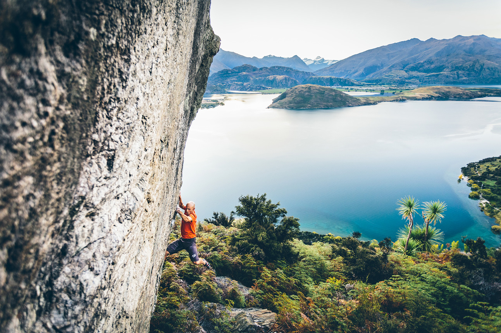
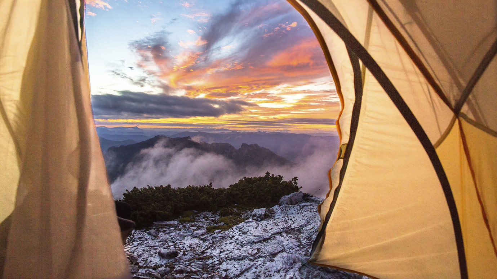
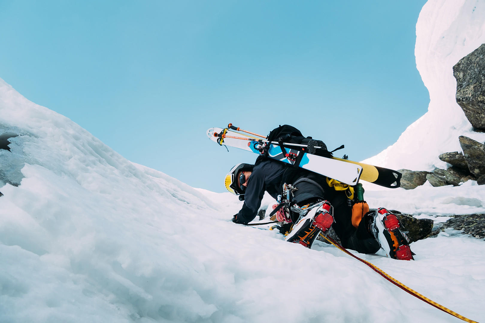
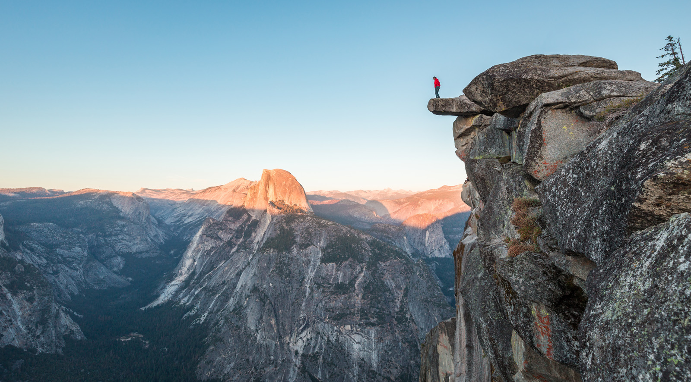
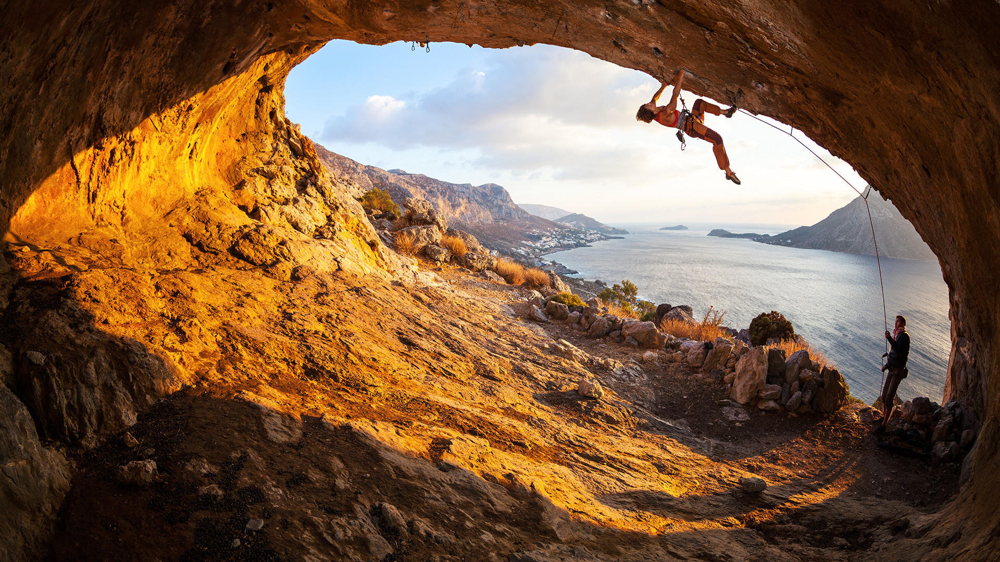

We document the people, routes, and moments that make the outdoors worth protecting.

Gear Guide · Hiking
An honest guide to ultralight backpacking — where the weight actually lives, what to cut, what to keep, and when to ignore all of it.
Climbing · Water · Cycling · Hiking



Start Here
Rockstar Adventures is built for people who are serious about the outdoors — but it's not a gatekeeping exercise. If you're planning your first multi-day route, you belong here. If you're a seasoned alpinist looking for detailed beta on a route you haven't done, you belong here too. The depth of the archive is the point. If you know roughly what you want to do but haven't committed to a specific route yet, the Destinations section is the fastest way in. It's organised by region, and every destination page links to every relevant route, gear guide, and field note we've published for that area. Start broad, then go deep.
Every route published on Rockstar Adventures has been completed by a Rockstar contributor before a word is written for public consumption. No desk research. No secondhand accounts aggregated from trip reports on other platforms. If the trail doesn't go, or the permit system has changed, or the hut is closed for the winter — we find out in the field, not in the edit. It costs more time. It produces better information.
A Rockstar Adventures trip report is not a summary. It's a working document: full gear lists with weights and model numbers, weather windows with specific dates and conditions, permit processes with links and lead times, camp notes with coordinates, water sources, and honest assessments of ground quality. The kind of detail that actually changes how you plan. We write for the reader who is three weeks out and needs to know exactly what they're getting into.
Routes change. Bridges wash out. Access agreements expire. Fire closures redraw the map. Trail conditions that were accurate in September can be dangerous in April. Every report on Rockstar Adventures carries a last-verified date — and when conditions shift materially, we go back, revisit the route, and update the record. We consider outdated advice on active terrain a form of negligence. We take that seriously.
Gear up, read the briefing, then go. Every route you need is here.